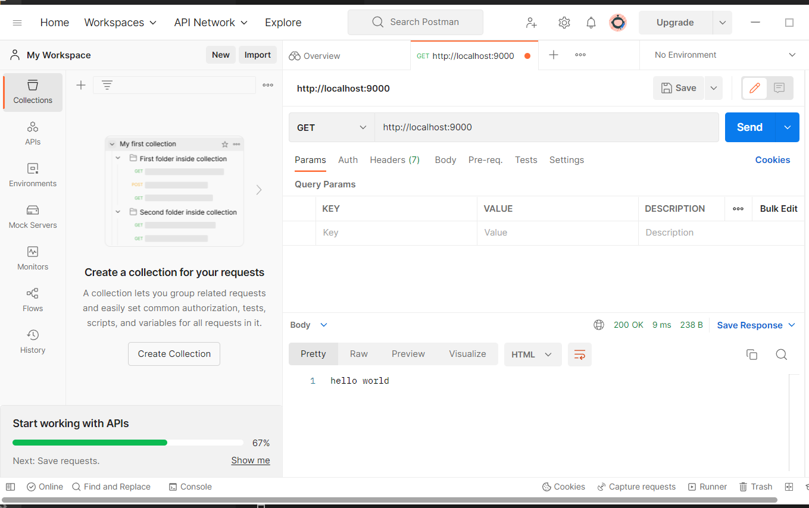

Social Media WebApp
This is a whatsapp clone
This Webapp has all the chatting features like whatsapp
All the messages are stored at the MongoDb database. I use Postman to test the API and MongoDB to store the data.
Technologies:
- - JavaScript
- - Visual Studio Code + REST Framework
- - React JS, NodeJS
- - HTML/CSS
- - MongoDb
- - Postman
- - Express Framework
API Testing
